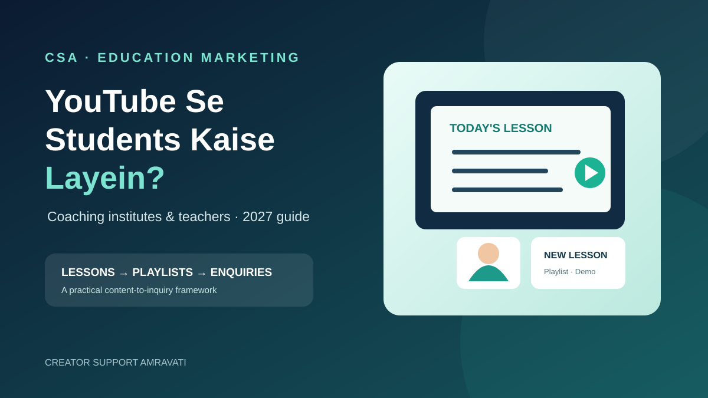
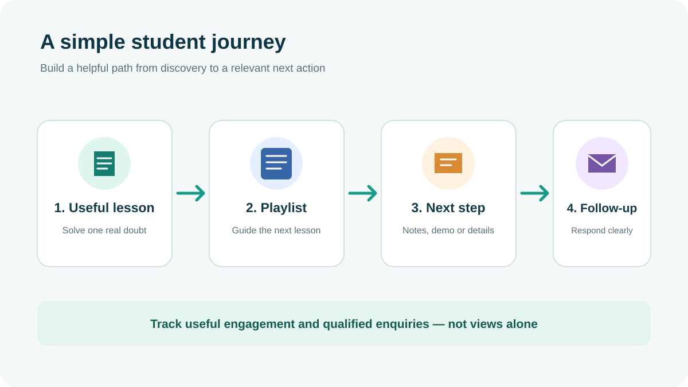

Coaching Institutes Aur Teachers Ke Liye YouTube Se Students Kaise Layein? (2027 Guide)
Aaj students aur parents kisi coaching institute, teacher ya online course ko choose karne se pehle teaching style, explanation ki clarity aur available learning resources dekhna chahte hain. YouTube par useful lessons publish karke educators apni teaching ko naye learners tak dikha sakte hain. Lekin sirf random lectures upload karna admission strategy nahi hai. Is guide mein ek practical content-to-inquiry system samjhenge—bina views, leads ya admissions ki guarantee diye.

- Students aur parents YouTube par kya dhoondhte hain
- Educational channel ke liye 5 practical growth steps
- Random uploads aur structured student journey ka difference
- Common mistakes, CTA aur inquiry tracking
- FAQs aur useful resources
1. Students aur parents YouTube par kya dhoondhte hain?
Viewer ko sirf “full syllabus lecture” nahi chahiye hota. Aksar woh apni immediate problem ka clear answer aur teacher ke padhane ka andaaz samajhna chahta hai. Apne content plan ko in chaar needs ke around banayein:
- Concept clarity: kisi difficult topic, formula ya rule ka simple explanation, worked example aur short recap.
- Exam strategy aur common mistakes: question attempt karne ka approach, time management, revision method aur frequently misunderstood concepts.
- Paper analysis aur syllabus context: previous-year questions ko explain karein, lekin “100% guaranteed questions” jaise unsupported claims se bachein. Official exam notification aur syllabus ko source banayein.
- Teacher ka teaching style: voice clarity, pace, board writing, examples aur doubt-handling ka sample.
Jab videos real learning problems solve karte hain, viewer ko aapki teaching ka sample milta hai. Trust useful content se build hota hai—sirf promotional claims se nahi.
2. Educational YouTube channel grow karne ke 5 practical steps
Step 1: Syllabus topic ke saath student pain point jodiye
Sirf chapter ka naam title mein likhne ke bajay ek specific learning outcome batayein. Example: “Quadratic Equations Part 1” ke badle “Quadratic Equations ke 3 common mistakes: examples ke saath” jaisa title viewer ko video ka purpose samjhata hai. Title aur thumbnail mein wahi promise karein jo video actually deliver karta hai.
Step 2: Board, smart-board aur audio clarity par kaam karein
Educational videos mein board ya screen par likha content aur teacher ki voice dono readable / understandable hone chahiye. Text bada aur high-contrast rakhein, glare check karein, camera ko stable rakhein aur mic ko clothing rustle se door position karein. 40-minute lecture record karne se pehle 30-second test clip phone par dekh-sun kar verify karein.
Studio setup ke detailed tips ke liye Online Teaching & Smart Board Studio Setup Guide dekhein.

Step 3: Long lessons se short clips banayein
Detailed lecture se ek concept, tricky question ya exam tip ka short vertical clip banaya ja sakta hai. Shorts naye viewers ko topic se introduce kar sakte hain; full lesson deeper explanation deta hai. Har short clip ko complete standalone answer banane ki koshish karein aur related full lesson ka link available ho toh add karein. Sirf repetitive fragments publish na karein.
Step 4: Playlists ko learning path banayein
Playlists ko class, subject, exam, language aur topic ke hisaab se organize karein. Playlist ka naam clear rakhein, first video mein learning outcome batayein aur descriptions mein relevant next lesson link karein. New visitor ko channel par aate hi samajh aana chahiye ki shuruaat kahan se kare.
Step 5: Natural aur useful call-to-action dein
Har video mein ek relevant next step choose karein—free notes, next lesson, demo class details, syllabus page ya admission enquiry. CTA ko video ke context se jodein; har 30 seconds mein admission pitch dena zaroori nahi. Description aur pinned comment mein accurate contact / landing-page details rakhein. Inquiry form mein sirf zaroori information maangein aur student data ko responsibly handle karein.
3. Random lecture upload vs. strategic student journey
| Aspect | Random lecture uploads | Structured education channel |
|---|---|---|
| Content mix | Sirf long class recordings | Concept explainers, exam guidance, Shorts aur detailed lessons |
| Titles & thumbnails | Chapter number ya date only | Specific learner problem aur clear, honest outcome |
| Viewer journey | Ek video ke baad next step unclear | Related video, playlist aur useful resource ka path |
| Trust building | Teaching approach ka limited sample | Consistent explanations, examples aur transparent course information |
| Enquiry process | Generic “contact us” message | Relevant demo / course details, clear contact method aur response process |
| Measurement | Views ko hi success samajhna | Audience retention, returning viewers, relevant clicks aur qualified enquiries ko alag dekhna |
Important: Views aur subscribers awareness indicators hain; ye automatically admissions mein convert nahi hote. YouTube Analytics aur apne enquiry records ko saath dekhkar samjhein ki kaun sa content genuinely relevant audience la raha hai.
4. Ek simple weekly content mix ka example
Har institute ko roz upload karna zaroori nahi. Apne teaching schedule aur production capacity ke hisaab se sustainable cadence choose karein. Example ke taur par:
- 1 detailed lesson: ek high-demand concept ko examples ke saath samjhayen.
- 2 short clips: usi topic ke ek common doubt aur ek quick revision point ko cover karein.
- 1 student-help video: exam preparation, study planning, paper analysis ya subject selection par guidance dein.
- 1 community interaction: comments se agle topics identify karein aur suitable questions ka jawab dein.
Yeh fixed algorithm formula nahi hai. Agar quality maintain nahi ho rahi, toh frequency kam karke lesson clarity aur consistency improve karein.
5. Teachers aur coaching institutes ki 4 common mistakes
- Bina hook ke seedha lecture shuru karna: opening mein batayein ki learner kya seekhega aur yeh topic kyon useful hai. Lambi intro ya repeated branding se bachein.
- Thumbnail mein poora question paper bhar dena: mobile par readability check karein. Ek main visual aur kuch concise words kaafi ho sakte hain; exact word count koi universal rule nahi.
- Sirf promotional videos publish karna: admission announcement ke saath free, genuinely helpful lessons bhi dein. Viewer ko pehle teaching quality judge karne ka mauka mile.
- Unrealistic upload schedule: exam season mein over-publish karke phir gayab hone ke bajay manageable schedule banayein aur batch recording ka use karein.
6. YouTube se aane wali enquiries ko kaise samjhein?
Har video ke liye ek simple tracking sheet rakhein: video title, publish date, target class / exam, views, average view duration, audience retention, description link clicks (agar measurable hon), enquiry count aur enquiry ka source. Form ya phone par pooch sakte hain: “Aapko hamare baare mein kahan se pata chala?” Isse YouTube awareness aur actual admission enquiry ke beech ka difference samajhne mein madad milegi.
Enquiry ko qualified tabhi samjhein jab student ka course / class interest relevant ho aur unhone contact karne ki permission di ho. Student results, testimonials, marks ya classroom footage publish karne se pehle proper consent lein; minors ke liye parent / guardian permission aur institute policies ka dhyan rakhein.
Frequently asked questions
Kya local coaching institute ke liye bhi YouTube kaam karta hai?
Haan, local syllabus, exam doubts, teaching language aur area-specific guidance par useful videos aas-paas ke learners tak pahunchne mein madad kar sakte hain. Local discovery ke liye institute ka naam, location aur contact details ko accurate rakhein. Results audience demand aur execution par depend karte hain.
Kya educational channel ke liye expensive studio zaroori hai?
Nahi. Shuruaat ke liye clean lighting, clear mic, readable board / screen aur stable framing par focus karein. Smartphone se bhi useful lessons record ho sakte hain. Setup ko actual need aur budget ke hisaab se upgrade karein.
Video kitna lamba hona chahiye—short concept video ya full lecture?
Dono ka role alag hai. Short concept videos ek focused doubt solve kar sakte hain; detailed sessions complex topics ko depth mein cover karte hain. Duration ko topic aur learner need ke hisaab se decide karein, kisi fixed number ko rule na banayein.
Teachers editing aur thumbnail design ka waqt kaise bachayein?
Reusable templates, batch recording, standard intro / outro, organized footage folders aur simple editing checklist banayein. Repetitive production tasks ke liye team ya professional support bhi consider kar sakte hain.
Useful tools, services aur further reading
- Creator Packaging Kit — titles, descriptions aur hashtags ko plan karne ke liye.
- CSA Services — video editing, thumbnails, production aur digital support ki details.
- Contact Creator Support Amravati — project ya production consultation ke liye.
- YouTube Thumbnail CTR Guide — clear aur mobile-friendly thumbnail packaging ke practical tips.
- 2027 Creator Growth Blueprint — content planning, retention aur multi-platform workflow.
- AdSense-Ready Blog Checklist — website content quality aur trust elements ke liye.
Official references: YouTube Help Center · YouTube Creators · Google Search Central: Helpful, reliable, people-first content.
About the author: Rajkumar Chavhan is the founder of Creator Support Amravati and is described by the author as a digital marketing specialist with 8+ years of experience. His work includes YouTube packaging, thumbnails, video editing, SEO and web development for educators, creators and businesses. Learn about CSA.
Editorial disclosure: This article is for educational and informational purposes. It explains a practical content workflow and does not promise views, leads, admissions, rankings or business results. Recommendations should be adapted to the institute's audience, policies and resources. For our content process, read the CSA Editorial Policy. Production and design support is available through Creator Support Amravati.